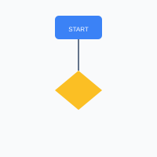

graph TD
A[Start] --> B{Is it working?}
B -->|Yes| C[Great!]
B -->|No| D[Debug]
D --> B
C --> E[End]Editor
Visual Viewport

graph TD
A[Start] --> B{Is it working?}
B -->|Yes| C[Great!]
B -->|No| D[Debug]
D --> B
C --> E[End]